Esto es la propuesta antes de tocar el juego. Las imágenes salen del renderizador del mod con la malla y las texturas reales de Rajang; las cifras son las que entrarían en el código. Revísala con el grupo y dime qué cambias. Al final hay cinco preguntas, y al lado de cada una lo que haré si no me dices nada.
Implementado · 5 de octubre de 2026Con los valores por defecto de las cinco preguntas (abajo). Compila y sus recursos cargan sin errores en el cliente de desarrollo; falta probarlo jugando para ajustar los números. Las hojas de control de las animaciones, antes y después, están al final.
De la prueba: «muy tosco y lento»; tendría que tener «ataques rápidos y con un poco más de daño»; gusta el efecto que vuelve lento; los meteoritos son «una maravilla» pero necesitan un ajuste.
Nuevo
Embestida de Jade
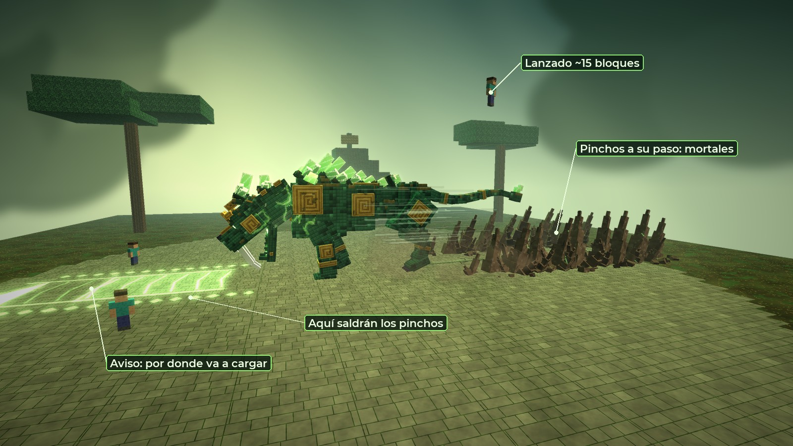
A mitad de la carga: delante queda la flecha del aviso; detrás, los pinchos que han reventado a su paso.
Cómo va
Cuándo
Su presa está a 10–36 bloques en línea recta. Peso 5 en el sorteo, como la Garra.
Aviso
Se agazapa y rasca el suelo. Una flecha le sale de los pies hacia donde va a cargar y se va llenando: 1,2 s en la fase I, 0,85 s en la IV. Al llenarse, la dirección queda fija.
Carga
26 bloques/s en línea recta, hasta 6 bloques más allá de la presa (36 como mucho). Una pared lo para.
Su cuerpo
Mata (10 000; solo salva un tótem), te lanza unos 15 bloques hacia arriba y te deja el Peso de la Tierra 3 s.
Pinchos
Revientan a su paso, a 4,2 bloques de cada lado, uno cada 2,2 bloques. Igual de mortales, el mismo lanzamiento y el mismo Peso. Duran 3 s y se hunden.
Después
Frena derrapando (0,7 s) y se queda 1 s jadeando: la ventana para pegarle.
Enfriamiento
13 s en la fase I, 8,3 s en la IV.
Cómo se sale
La flecha marca su cuerpo y las dos filas de rombos marcan los pinchos: la franja mortal mide unos 13 bloques de ancho.
Desde el centro hay que apartarse unos 7 bloques de lado. Con el aviso más el tiempo que tarda en llegar, a 20 bloques se tiene casi 2 s.
Ponerse detrás de un muro también vale: se para contra él.
Es el ataque que le faltaba para «no dejar que te acerques»: el que se queda quieto en su línea, muere.
Nuevo
Tumba de Raíces
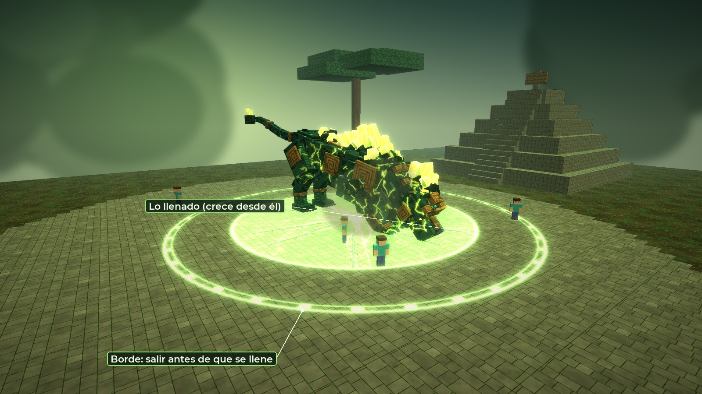
Lleva el 68 % del llenado. El de pegado a su cuerpo ya no llega.
Cómo va
Cuándo
Desde la fase II, si hay alguien a 14 bloques o menos: castiga a los que se le pegan. Peso 3 en el sorteo.
Carga
Clava las garras y ruge contra el suelo. Inmune mientras carga.
Círculo
Radio 16 bloques alrededor de él. El borde se ve desde el primer instante; lo de dentro se llena desde el centro en 3,5 s, siempre igual, en cualquier fase.
Al llenarse
Todo lo que siga dentro: muerte (10 000; solo salva un tótem) y el Peso de la Tierra 5 s al que se salve con el tótem. Revientan raíces por todo el círculo.
Después
1 s jadeando.
Enfriamiento
30 s en la fase II, 22 s en la IV. No sale hasta 8 s después de un Terremoto.
Por qué esos números
Pediste que escapar se pueda, pero que quien se duerma 1–1,5 s pegado a él ya no llegue. Con radio 16 y 3,5 s sale justo eso.
El Terremoto pone el Peso a todos durante 8 s. Con ese Peso nadie sale a tiempo: por eso la Tumba no puede salir justo después.
Desde el cuerpo a cuerpo (unos 4 bloques de su centro) hasta el borde hay 12 bloques. El que estaba más lejos tiene más margen.
Cambio
Picos y pilares
Los pinchos de la Garra y los pilares del Terremoto siguen haciendo el mismo daño, pero ahora te mandan al cielo y te frenan. La caída desde 10 bloques son 3,5 corazones antes de la armadura: el golpe duele dos veces.
Antes
Ahora
Garra (picos)
te lanza de 3 a 7,5 bloques según el tamaño
10 bloques, todos
Terremoto (pilares)
te lanza unos 5 bloques
10 bloques
Cualquier pincho
nada más
Peso de la Tierra 3 s (−35 % velocidad, −50 % salto)
Embestida
—
15 bloques, mortal, y el mismo Peso 3 s
El Peso de un pincho dura 3 s como mucho, como pediste. El del Terremoto, el que cae sobre todos a la vez, se queda en 8 s. Si ya lo llevas más largo, el pincho no te lo acorta.
Cambio
Cataclismo de Jade
Fragmentos más grandes y menos. El que cae sobre cada jugador se queda, que es el corazón del ataque; los que caen al azar por la plaza bajan a un tercio, porque cada uno tapa el triple de suelo.
Antes
Ahora
Muerte (encima)
radio 1,9–2,2
radio 3,3–4,0
Daño cerca
hasta 5,5 bloques
hasta 9 bloques
Uno sobre cada jugador
sí
sí
Extra al azar por oleada
10 + jug/2 + 3·fase (tope 40)
3 + jug/6 + fase (tope 14)
Ejemplo: fase III, 10 jugadores
24 extra
7 extra
Tamaño que se ve
×1,0–1,6
×1,8–2,4, con su marca a juego
Ojo con los grupos grandes: como cada jugador sigue llevando su fragmento encima y ahora es más grande, si el grupo va apiñado los fragmentos de unos alcanzan a los otros. La respuesta es separarse, y es la que el ataque quiere enseñar.
Cambio
Sello de la Tierra
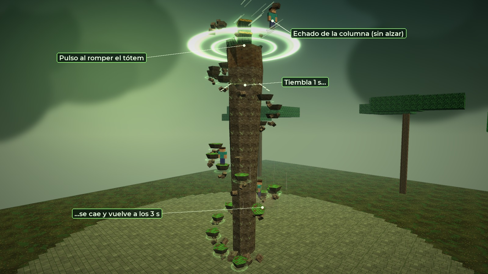
Una de las cuatro columnas: el pulso del tótem recién roto, un escalón temblando y otro cayendo.
Escalones que se caen
Cada cuánto
Cada 1,5 s, una piedra al azar de alguna columna. Como mucho una a la vez por columna; las tres de más abajo no caen.
Aviso
Tiembla 1 s: se sacude, suelta polvo y cruje.
Cae
Se suelta y cae. Si estabas encima, caes con ella.
Vuelve
A los 3 s sube volando a su sitio.
Cada piedra está un bloque más alta que la anterior. Si falta una, el siguiente salto es de dos bloques y no se puede dar: toca esperar a que vuelva, con el reloj del Sello corriendo.
Pulso al romper cada tótem
Alcance
7 bloques alrededor del tótem (y 5 arriba y abajo): la cima y las piedras de arriba.
Daño
27 / 37 / 44 / 55 según la fase, el del Terremoto, con el +30 % contra armadura.
Empujón
Fuerte y en horizontal, unos 5–6 bloques: te echa de la columna. No te alza; solo un saltito mínimo para despegarte del suelo, que si no el roce te frena en 2 bloques.
El último
El cuarto tótem sigue sin daño de caída para nadie, como ahora.
Caer desde la cima son unos 26 bloques: con Protección IV, unos 4 corazones. Sumado al pulso, duele pero no mata con el equipo para el que está pensado.
Nuevo
Furia de Jade
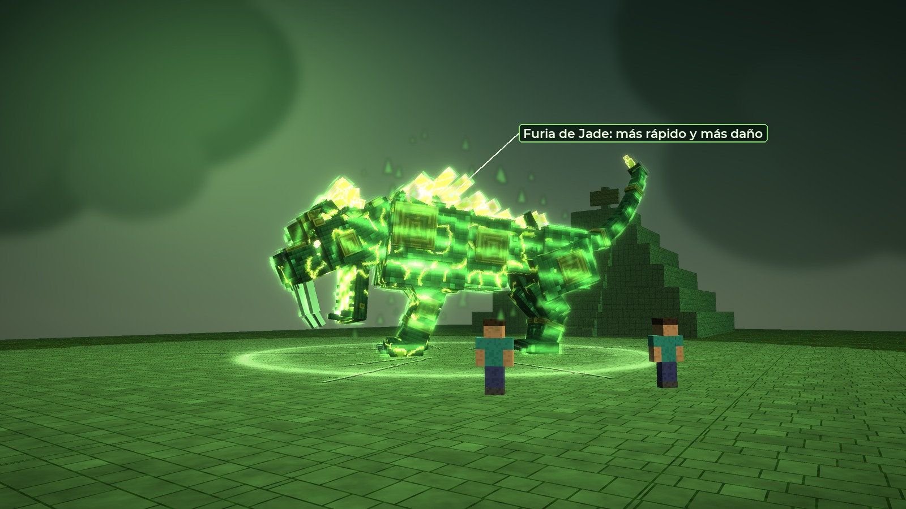
El aura corre por todo el cuerpo como la carga del creeper, pero en el verde de la maldición.
Cómo va
Cuándo
Si no rompéis los cuatro tótems a tiempo. El Rugido de Jade sigue matando a todos salvo tótem; los que queden, se lo encuentran así.
Ataques
×1,25 más rápidos (encima del ritmo de su fase).
Daño
×1,35 en todo lo que no sea ya mortal.
Ritmo
Enfriamientos ×0,65, la pausa entre ataques a la mitad, corre ×1,15.
Dura
Hasta que lo derribéis: un Sello superado o un Cataclismo sin muertes (ver pregunta 1).
Cómo se ve
Una segunda capa sobre su cuerpo con bandas verdes que corren, como la carga del creeper.
Llamas verdes por las grietas y los ojos más encendidos.
En la barra, el rótulo cambia a FURIA y el relleno late en verde vivo.
Animación
Andar, correr y atacar
Lo de «tosco y lento» viene sobre todo de aquí. Las animaciones se escriben pose a pose en Python y se hornean en el juego. Antes de compilar te mando las hojas de control: cada animación en una tira de fotogramas, la de ahora al lado de la nueva.
Qué
Ahora
Cambio
Andar
ciclo de 1,6 s; las patas van en diagonal por un signo cambiado (el comentario dice lateral)
el paso lateral de los felinos de verdad; cabeza baja de acecho; los hombros suben y bajan con cada mano; el peso cae en cada pisada; ciclo de 1,3 s
Correr
galope rotatorio correcto pero corto
más tiempo en el aire, la espalda se dobla y se estira más, cabeza firme mirando a la presa, orejas pegadas, la cola de timón
Distancias
corre a más de 16 bloques; entre 7 y 16 anda despacio
corre a más de 10; entre 6 y 10, acecho rápido. Se acabó el paseo lento a media distancia
Garra y Terremoto
cargas largas, golpe con el brazo
anticipación más corta y marcada, el golpe con todo el cuerpo, recuperación más corta
Nuevas
—
agazaparse y rascar (aviso de la Embestida), la carga, la frenada derrapando, rugido contra el suelo (Tumba), entrada en Furia
Animación
Hojas de control
Cada animación en seis fotogramas, con la malla y la piel del juego. Arriba la de antes, abajo la nueva. En el andar se ve la cabeza más baja y el paso lateral; en el galope, el cuerpo en el aire; en la Garra y el Terremoto, el golpe con todo el cuerpo y la carga más corta.
Andar · antes (1,6 s)
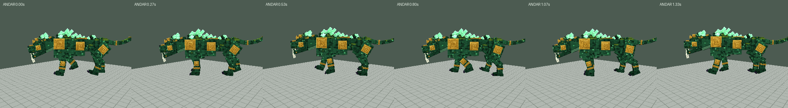
Andar · ahora (1,3 s)
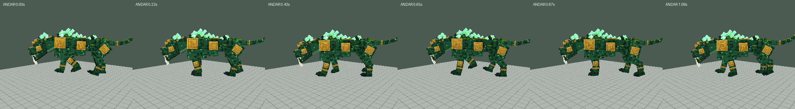
Correr · antes
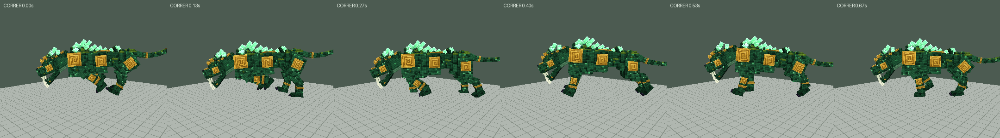
Correr · ahora
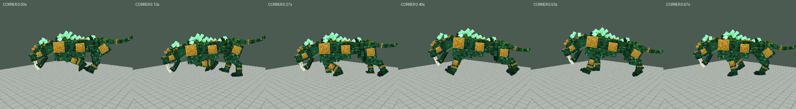
Garra · antes (golpe a 0,5 s)
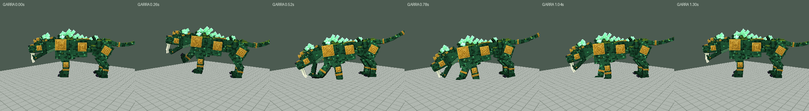
Garra · ahora (golpe a 0,42 s)
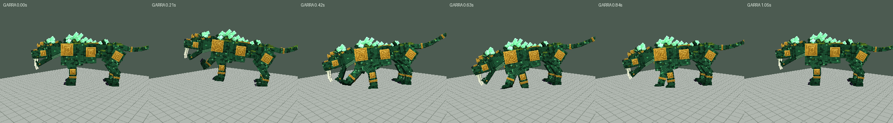
Terremoto · antes (golpe a 0,95 s)
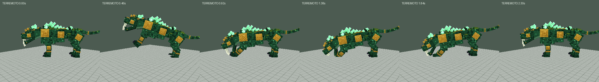
Terremoto · ahora (golpe a 0,8 s)
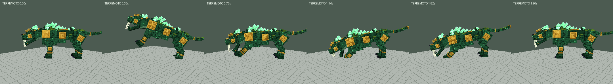
Nueva · Embestida, el aviso: se agazapa y rasca
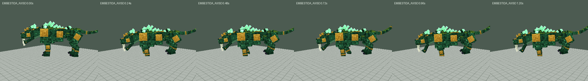
Nueva · Embestida, la carga
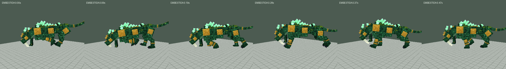
Nueva · Embestida, la frenada y el jadeo
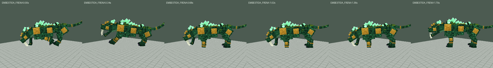
Nueva · Estampado contra un muro
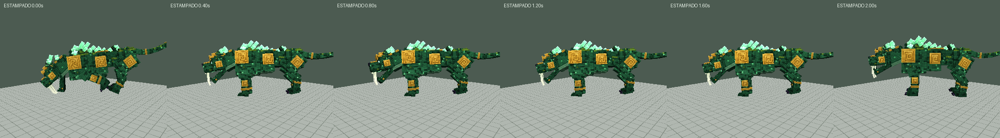
Nueva · Tumba de Raíces
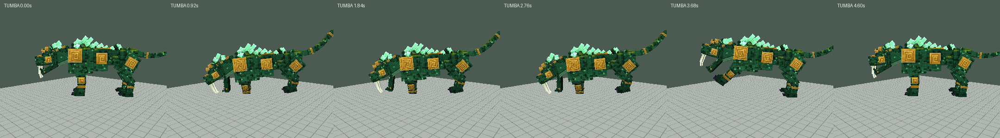
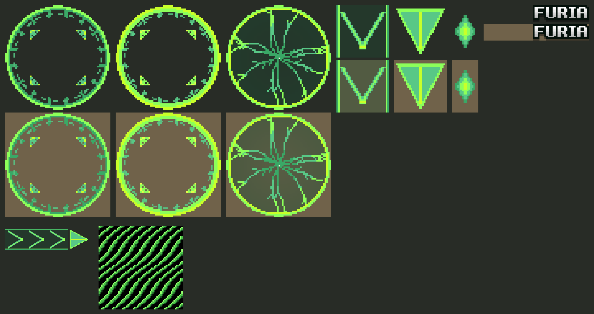
Las texturas nuevas, ampliadas sobre fondo oscuro y sobre tierra: el borde de la Tumba (y su parpadeo), lo llenado, la flecha de la Embestida, el rombo de los pinchos, el rótulo FURIA y las bandas del aura.
Las cinco preguntas
Se implementó con lo que dice «por defecto» en cada una. Si queréis otra cosa, se cambia.
¿Cuánto dura la Furia? Hasta que lo derribéis (un Sello superado o un Cataclismo sin muertes), o un tiempo fijo, por ejemplo 60 s.
Si no me dices nada: hasta que lo derribéis.
¿Qué más había que arreglar del Cataclismo? En la prueba dijisteis que necesitaba un ajuste. Aquí solo cambio el tamaño y el número.
Si no me dices nada: solo eso.
¿Se estampa contra las paredes? Si la Embestida choca contra un muro, que quede 2 s aturdido con daño doble: un contraataque para el que lo atraiga a una pared.
Si no me dices nada: sí.
¿Más daño base? Subir un 15 % la Garra y el Terremoto. Ya suben la amenaza la Embestida, la Tumba, los lanzamientos y la Furia.
Si no me dices nada: no.
¿Las fases? Embestida desde la I y Tumba desde la II.